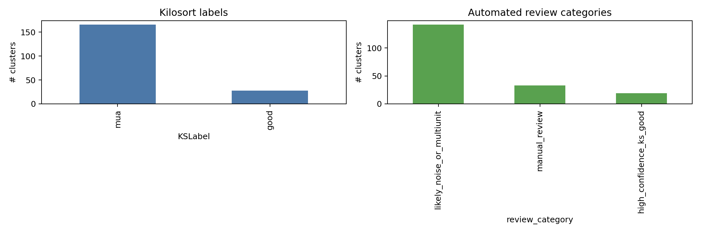
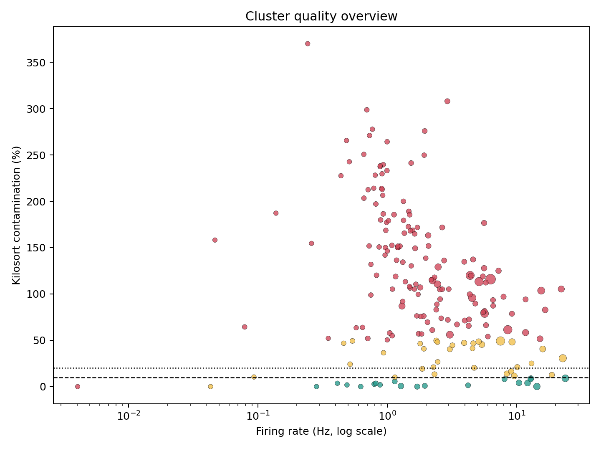

This is an automated pre-curation report. It does not replace Phy review.
cluster_quality_summary.csv | phy_review_priority.csv | cluster_quality_summary.json


| review_priority | cluster_id | review_category | KSLabel | ContamPct | Amplitude | spike_count | firing_rate_hz | isi_violation_fraction | best_raw_channel | best_channel_shank | best_on_off_condition | best_on_off_delta_hz | n_conditions_q05 |
|---|---|---|---|---|---|---|---|---|---|---|---|---|---|
| 1 | 9 | high_confidence_ks_good | good | 9 | 12.6 | 254465 | 23.91 | 0.006244 | 10 | 1 | amp180_freq5 | -1.653 | 0 |
| 2 | 177 | high_confidence_ks_good | good | 0.1 | 27.8 | 153187 | 14.39 | 0.0002285 | 120 | 2 | amp250_freq26 | -1.395 | 0 |
| 3 | 191 | high_confidence_ks_good | good | 3.8 | 22.6 | 129790 | 12.19 | 0.001818 | 124 | 2 | amp250_freq26 | -0.875 | 0 |
| 4 | 112 | high_confidence_ks_good | good | 4.1 | 18.8 | 111417 | 10.47 | 0.001993 | 84 | 2 | amp180_freq26 | -0.83 | 0 |
| 5 | 187 | manual_review | good | 11.5 | 12.3 | 102502 | 9.63 | 0.005327 | 124 | 2 | amp250_freq26 | -0.815 | 0 |
| 6 | 23 | high_confidence_ks_good | good | 0.6 | 51.1 | 13614 | 1.279 | 0.0005142 | 15 | 1 | amp100_freq26 | -0.7117 | 0 |
| 7 | 173 | manual_review | good | 13.9 | 13.9 | 89779 | 8.434 | 0.004879 | 121 | 2 | amp180_freq5 | -0.6783 | 0 |
| 8 | 158 | high_confidence_ks_good | good | 8.8 | 14.8 | 137851 | 12.95 | 0.002503 | 115 | 2 | amp100_freq26 | -0.655 | 0 |
| 9 | 21 | manual_review | good | 16.4 | 13.4 | 96893 | 9.103 | 0.005191 | 14 | 1 | amp100_freq26 | 0.5617 | 0 |
| 10 | 174 | high_confidence_ks_good | good | 0 | 27.7 | 18202 | 1.71 | 0 | 121 | 2 | amp250_freq5 | -0.505 | 0 |
| 11 | 102 | manual_review | good | 12.6 | 10.2 | 200185 | 18.81 | 0.007493 | 81 | 2 | amp180_freq5 | -0.485 | 0 |
| 12 | 80 | high_confidence_ks_good | good | 8 | 10.7 | 137067 | 12.88 | 0.002269 | 61 | 1 | amp180_freq5 | -0.4683 | 0 |
| 13 | 0 | high_confidence_ks_good | good | 8 | 10.6 | 86111 | 8.09 | 0.001521 | 0 | 1 | amp180_freq26 | 0.4183 | 0 |
| 14 | 129 | manual_review | mua | 49.2 | 16.5 | 80212 | 7.536 | 0.08231 | 91 | 2 | amp180_freq26 | 3.085 | 0 |
| 15 | 120 | manual_review | good | 13.3 | 21.8 | 24748 | 2.325 | 0.00299 | 86 | 2 | amp100_freq5 | 0.3933 | 0 |
| 16 | 100 | manual_review | mua | 30.6 | 10.1 | 243061 | 22.83 | 0.03398 | 81 | 2 | amp250_freq26 | -2.005 | 0 |
| 17 | 119 | high_confidence_ks_good | good | 5.6 | 26.5 | 12193 | 1.145 | 0.0009843 | 86 | 2 | amp250_freq26 | 0.37 | 0 |
| 18 | 111 | high_confidence_ks_good | good | 0.8 | 27.2 | 20840 | 1.958 | 0.0001919 | 85 | 2 | amp100_freq5 | 0.365 | 0 |
| 19 | 101 | manual_review | good | 19.2 | 11.3 | 19908 | 1.87 | 0.002461 | 81 | 2 | amp100_freq26 | 0.36 | 0 |
| 20 | 58 | manual_review | mua | 48.2 | 10.6 | 98506 | 9.254 | 0.02172 | 49 | 1 | amp250_freq5 | -1.298 | 0 |
| 21 | 11 | manual_review | mua | 40.6 | 11.3 | 170053 | 15.98 | 0.01458 | 12 | 1 | amp180_freq5 | -0.9317 | 0 |
| 22 | 60 | manual_review | mua | 45.4 | 19.4 | 57480 | 5.4 | 0.01211 | 48 | 1 | amp180_freq26 | 0.91 | 0 |
| 23 | 157 | high_confidence_ks_good | good | 1.4 | 8.9 | 44998 | 4.227 | 0.0001778 | 113 | 2 | amp250_freq26 | 0.3267 | 0 |
| 24 | 168 | high_confidence_ks_good | good | 2.7 | 15.3 | 8465 | 0.7953 | 0.0009452 | 120 | 2 | amp100_freq5 | 0.29 | 0 |
| 25 | 180 | manual_review | mua | 48.6 | 10.5 | 54352 | 5.106 | 0.01128 | 123 | 2 | amp250_freq26 | -0.675 | 0 |
| 26 | 172 | manual_review | mua | 47.2 | 18.3 | 41964 | 3.942 | 0.01466 | 121 | 2 | amp100_freq26 | 0.5617 | 0 |
| 27 | 22 | manual_review | mua | 49.6 | 10.5 | 25584 | 2.404 | 0.01016 | 15 | 1 | amp100_freq5 | -0.5183 | 0 |
| 28 | 76 | manual_review | mua | 21 | 11.4 | 108183 | 10.16 | 0.005398 | 58 | 1 | amp100_freq26 | -0.5017 | 0 |
| 29 | 118 | high_confidence_ks_good | good | 1.9 | 19.7 | 9389 | 0.8821 | 0.0005326 | 86 | 2 | amp180_freq5 | 0.25 | 0 |
| 30 | 184 | manual_review | mua | 40.3 | 20.4 | 32506 | 3.054 | 0.009783 | 123 | 2 | amp250_freq26 | -0.4467 | 0 |
| 31 | 134 | manual_review | mua | 46.7 | 9.3 | 49426 | 4.643 | 0.007203 | 95 | 2 | amp250_freq26 | -0.4233 | 0 |
| 32 | 175 | high_confidence_ks_good | good | 3.5 | 15.1 | 8703 | 0.8176 | 0.001034 | 121 | 2 | amp100_freq26 | 0.21 | 0 |
| 33 | 178 | manual_review | mua | 20.3 | 9.9 | 50141 | 4.711 | 0.004348 | 122 | 2 | amp250_freq26 | -0.385 | 0 |
| 34 | 169 | high_confidence_ks_good | good | 0 | 26.4 | 6653 | 0.625 | 0 | 119 | 2 | amp250_freq26 | -0.2017 | 0 |
| 35 | 165 | manual_review | mua | 25 | 9.5 | 139304 | 13.09 | 0.007344 | 117 | 2 | amp250_freq5 | -0.3283 | 0 |
| 36 | 183 | manual_review | good | 10.2 | 28.3 | 12224 | 1.148 | 0.002782 | 122 | 2 | amp250_freq26 | -0.1533 | 0 |
| 37 | 83 | manual_review | mua | 44.6 | 9.7 | 34070 | 3.201 | 0.006751 | 62 | 1 | amp100_freq5 | -0.275 | 0 |
| 38 | 72 | manual_review | mua | 48 | 12.8 | 26071 | 2.449 | 0.007595 | 54 | 1 | amp100_freq26 | 0.2533 | 0 |
| 39 | 16 | manual_review | mua | 41.2 | 9.5 | 48694 | 4.575 | 0.008276 | 14 | 1 | amp250_freq5 | -0.2467 | 0 |
| 40 | 181 | high_confidence_ks_good | good | 1.8 | 37.5 | 5209 | 0.4894 | 0.000384 | 122 | 2 | amp100_freq5 | -0.1167 | 0 |
| 41 | 13 | manual_review | mua | 49.3 | 10.7 | 5739 | 0.5392 | 0.002091 | 12 | 1 | amp250_freq26 | -0.2433 | 1 |
| 42 | 182 | manual_review | mua | 21 | 15.4 | 24282 | 2.281 | 0.001153 | 122 | 2 | amp250_freq26 | 0.2317 | 0 |
| 43 | 90 | likely_noise_or_multiunit | mua | 115.9 | 21.2 | 67227 | 6.316 | 0.4069 | 69 | 2 | amp180_freq26 | 4.462 | 0 |
| 44 | 110 | high_confidence_ks_good | good | 3.6 | 27.2 | 4390 | 0.4124 | 0.001139 | 85 | 2 | amp100_freq5 | -0.08167 | 0 |
| 45 | 122 | manual_review | mua | 40.8 | 21.2 | 20481 | 1.924 | 0.01172 | 86 | 2 | amp180_freq5 | -0.215 | 0 |
| 46 | 12 | manual_review | mua | 24.2 | 11.5 | 5505 | 0.5172 | 0.0009084 | 12 | 1 | amp180_freq26 | -0.2133 | 2 |
| 47 | 89 | likely_noise_or_multiunit | mua | 61.4 | 10.2 | 91328 | 8.58 | 0.08447 | 70 | 2 | amp180_freq26 | 3.005 | 0 |
| 48 | 106 | manual_review | mua | 46.4 | 13.6 | 19178 | 1.802 | 0.0073 | 84 | 2 | amp180_freq26 | -0.2133 | 0 |
| 49 | 127 | likely_noise_or_multiunit | mua | 113.3 | 15.8 | 54753 | 5.144 | 0.2281 | 91 | 2 | amp180_freq26 | 2.985 | 0 |
| 50 | 126 | likely_noise_or_multiunit | mua | 120 | 13 | 46702 | 4.387 | 0.2571 | 91 | 2 | amp180_freq26 | 2.773 | 0 |
| 51 | 128 | likely_noise_or_multiunit | mua | 78.8 | 14.9 | 60428 | 5.677 | 0.1133 | 91 | 2 | amp180_freq26 | 2.372 | 0 |
| 52 | 160 | high_confidence_ks_good | good | 0 | 8.8 | 3026 | 0.2843 | 0 | 115 | 2 | amp180_freq26 | -0.07167 | 0 |
| 53 | 93 | likely_noise_or_multiunit | mua | 95.8 | 12.2 | 48439 | 4.551 | 0.0981 | 75 | 2 | amp180_freq26 | 2.198 | 0 |
| 54 | 62 | likely_noise_or_multiunit | mua | 103.6 | 11 | 165486 | 15.55 | 0.04836 | 51 | 1 | amp250_freq26 | -1.825 | 0 |
| 55 | 107 | manual_review | good | 10.4 | 18.7 | 993 | 0.09329 | 0.001008 | 85 | 2 | amp250_freq5 | -0.04833 | 0 |
| 56 | 163 | likely_noise_or_multiunit | mua | 56 | 13.5 | 32539 | 3.057 | 0.07834 | 114 | 2 | amp180_freq26 | 1.752 | 0 |
| 57 | 161 | likely_noise_or_multiunit | mua | 114.5 | 13.4 | 23944 | 2.249 | 0.1787 | 114 | 2 | amp180_freq26 | 1.547 | 0 |
| 58 | 162 | likely_noise_or_multiunit | mua | 110.6 | 12.6 | 26087 | 2.451 | 0.154 | 114 | 2 | amp180_freq26 | 1.512 | 0 |
| 59 | 139 | manual_review | mua | 26.7 | 10.3 | 26217 | 2.463 | 0.002174 | 98 | 2 | amp100_freq26 | 0.1883 | 0 |
| 60 | 1 | likely_noise_or_multiunit | mua | 129.1 | 11.4 | 26403 | 2.48 | 0.1645 | 0 | 1 | amp180_freq26 | 1.305 | 0 |